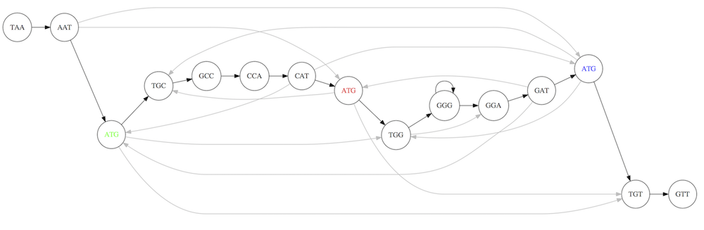
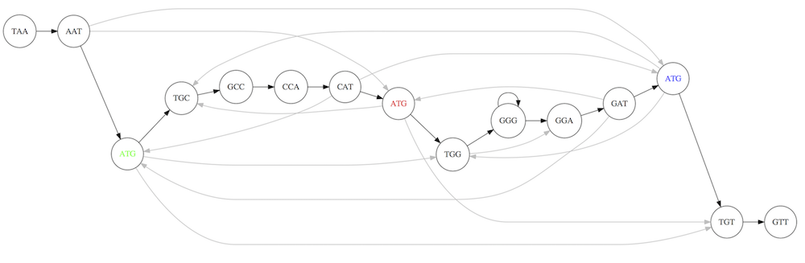
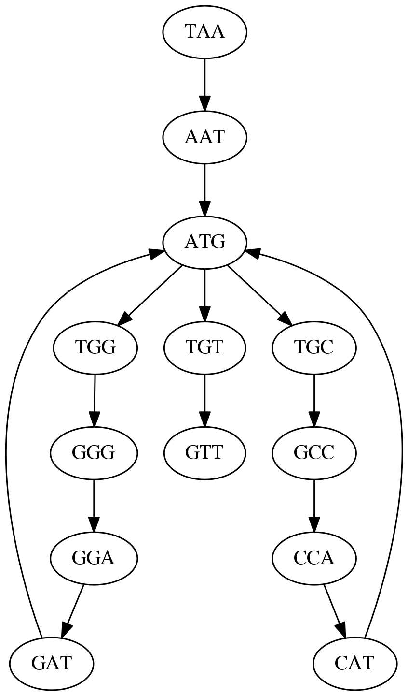
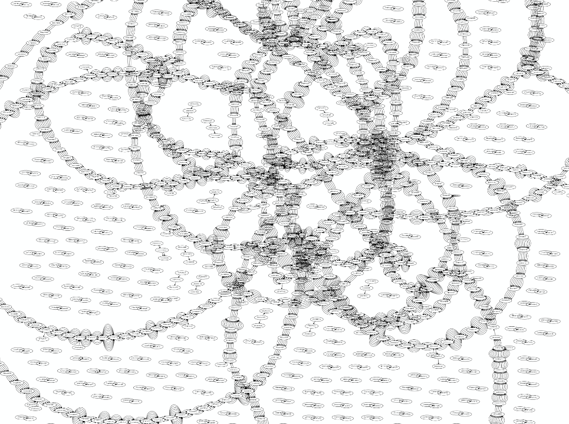
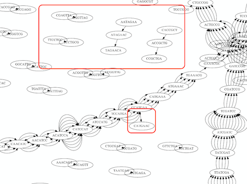

Unicycler Assembly
Contributors
Questions
I have short reads and long reads. How do I assemble a genome?
Objectives
Perform Quality Control on your reads
Perform a Small genome Assembly with Unicycler
Evaluate the Quality of the Assembly with Quast
Annotate the assembly with Prokka
Small Genome Assembly With Unicycler
.enlarge120[
Introduction to Genome Assembly
]
To start on Genome assembly you can read the previous assembly tutorials:
.enlarge120[
Assembly basics : Challenges of genome (and transcriptome) assembly
]
Genome assembly is a difficult task. In trying to explain it we will be relying on two highly regarded sources:
.enlarge120[
Genomes and reads: Strings and k-mers
]
k-mer composition
Genomes are strings of text. When we sequence genomes we use sequencing machines that generate reads. For now let’s assume that all reads have the same length k and every k-mer is sequenced only once. We will relax these assumptions later in this lecture. Thus sequencing a genome generates a large list of k-mers.
Suppose we are dealing with a very short genome TATGGGGTGC. Its k-mer composition (note the subscript) Composition_k(Text) is the collection of all k-mer substrings (including repeated ones). When k = 3 we get (basically we split sequence into windows of length 3 sliding window by 1 base every time):
Composition_3(TATGGGGTGC)= ATG,GGG,GGG,GGT,GTG,TAT,TGC,TGG
Composition_3(TATGGGGTGC)= ATG,GGG,GGG,GGT,GTG,TAT,TGC,TGG
Note that we have listed k-mers in lexicographic order (i.e., how they would appear in a dictionary) rather than in the order of their appearance in TATGGGGTGC. We have done this because the correct ordering of the reads is unknown when they are generated (i.e., a sequencing machine does not generate reads in any particular order).
Assembly by overlap
In the example above we know what the “genome” sequence is. In real life we don’t know that and our goal is to determine genome sequence given a scrambled collection of k-mers. Let’s consider the following collection of 3-mers representing a hypothetical genome:
AAT ATG GTT TAA TGT
Let’s “tile” k-mers if they overlap in k-1 nucleotides:
TAA
AAT
ATG
TGT
GTT
-------
TAATGTT
Now let’s apply it to slightly longer “genome” with the following 3-mer composition sorted in a lexicographic order:
AAT ATG ATG ATG CAT CCA GAT GCC GGA GGG GTT TAA TGC TGG TGT
TAA looks like a great beginning and we are continuing:
1 TAA
2 AAT
3 ATG
4 TGT
5 GTT
-------
TAATGTT
There is nothing in the original 3-mer composition, which starts with TT.
Let’s track back and instead of TGT in step 4 insert TGC:
1 TAA
2 AAT
3 ATG
4 TGC
5 GCC
6 CCA
7 CAT
8 ATG
9 TGG
10 GGA
11 GAT
12 ATG
13 TGT
14 GTT
----------------
TAATGCCATGGATGTT
We only used 14 3-mers from the total of 15, so our genome is shorter (we have extra parts!). This difficulty is related to the fact that there are three repeated ATG motifs in this genome and as a result each ATG can be extended by either TGG, TGC, or TGT.
The concept of coverage
Coverage is the number of reads covering a particular position in the genome. For example, in the following case:
TAA
AAT
ATG <- "reads" (15 bases total)
TGT
GTT
-------
TAATGTT <- "genome" (7 bases)
-------
0123456
The Coverage at positions 1 and 6 is 1, at positions 1 and 5 is 2, and at position 2, 3, and 4 is 3.
The Average Coverage will be 15/7 ~ 2x
Below is another, slightly more realistic example where average coverage is 177/35 ~ 7x:
CTAGGCCCTCAATTTTT
CTCTAGGCCCTCAATTTTT
GGCTCTAGGCCCTCATTTTTT
CTCGGCTCTAGCCCCTCATTTT
TATCTCGACTCTAGGCCCTCA <- 177 bases
TATCTCGACTCTAGGCC
TCTATATCTCGGCTCTAGG
GGCGTCTATATCTCG
GGCGTCGATATCT
GGCGTCTATATCT
-----------------------------------
GGCGTCTATATCTCGGCTCTAGGCCCTCATTTTTT <- 35 bases
-----------------------------------
| | | | |
0 10 20 30 34
The First and the Second laws of assembly
The goal of assembly process is to reconstruct an unknown genome sequence given a collection of scrambled sequencing reads:
CTAGGCCCTCAATTTTT
CTCTAGGCCCTCAATTTTT
GGCTCTAGGCCCTCATTTTTT
CTCGGCTCTAGCCCCTCATTTT
TATCTCGACTCTAGGCCCTCA <- Reads (Given)
TATCTCGACTCTAGGCC
TCTATATCTCGGCTCTAGG
GGCGTCTATATCTCG
GGCGTCGATATCT
GGCGTCTATATCT
-----------------------------------
<span>Speaker Notes</span><span>Speaker Notes</span><span>Speaker Notes</span><span>Speaker Notes</span><span>Speaker Notes</span><span>Speaker Notes</span><span>Speaker Notes</span><span>Speaker Notes</span><span>Speaker Notes</span><span>Speaker Notes</span><span>Speaker Notes</span>?? <- Genome (Unknown)
The goal of assembly process. Given sequencing reads reconstruct underlying genome sequence.
We’ve seen that this can (in principle) be accomplished by finding overlaps. We also discussed the concept of the coverage. We can now formulate the two first assembly laws.
The First Assembly Law: Overlaps imply co-location
Let’s define terms Prefix and Suffix using string TAA as an example:
Prefix(TAA) = TASuffix(TAA) = AA
The First law states that if a suffix of one read is similar to a prefix of another read…
TCTATATCTCGGCTCTAGG <- read 1
||||||| |||||||
TATCTCGACTCTAGGCC <- read 2
…then they may overlap (may be derived from the same location) within the genome.
TCTATATCTCGGCTCTAGG <- read 1
-------------------------------------
AGCGTTCTATATCTCGGCTCTAGGCCGTGCAGGACGT <- genome
-------------------------------------
TATCTCGACTCTAGGCC <- read 2
Note that in the above example suffix of the first read is not exactly identical to the prefix of the second read: they differ by a G-to-A substitution. Such differences are quite common in real life and may be caused by:
- sequencing errors - experimental or computational artifacts of DNA sequencing procedures.
- allelic differences - organisms such as human are diploid (and others, such as wheat are hexaploid) which maternal and paternal genomes being different at a number of genomic sites.
- polymorphic sites - DNA that is being sequenced is usually isolated from a large number of cells (e.g., white blood cells) or individuals (bacterial and viral cultures). Natural variation present in these cell (or viral particle) populations will manifest itself as these differences.
The Second Assembly Law: The higher the coverage, the better
The Second law states that higher coverage leads to more frequent and longer overlaps:
CTAGGCCCTCAATTTTT
TATCTCGACTCTAGGCCCTCA <- Low coverage
GGCGTCTATATCT
-----------------------------------
GGCGTCTATATCTCGGCTCTAGGCCCTCATTTTTT <- Genome
-----------------------------------
CTAGGCCCTCAATTTTT
CTCTAGGCCCTCAATTTTT
GGCTCTAGGCCCTCATTTTTT
CTCGGCTCTAGCCCCTCATTTT
TATCTCGACTCTAGGCCCTCA <- Higher coverage
TATCTCGACTCTAGGCC
TCTATATCTCGGCTCTAGG
GGCGTCTATATCTCG
GGCGTCGATATCT
GGCGTCTATATCT
Solving assembly problem with graphs
We can solve assembly challenge using overlaps between sequencing reads. However, to solve this problem effectively we need to first represent all overlaps in a way that would facilitate further analysis. Directed graphs help achieving this.
Directed graphs
Finding overlaps is identical to building a directed graph where directed edges connect nodes representing overlapping reads:

Directed graph representing overlapping reads. (Image from Ben Langmead).
For example, the string reconstruction we have seen earlier (with the difference of inserting GGG in line 10):
1 TAA
2 AAT
3 ATG
4 TGC
5 GCC
6 CCA
7 CAT
8 ATG
9 TGG
10 GGG
11 GGA
12 GAT
13 ATG
14 TGT
15 GTT
-----------------
TAATGCCATGGGATGTT
can be represented as a following directed graph (or genome path):

Genome path. Trimers composing the TAATGCCATGGGATGTT sequence represented as the “genome” path. (Fig. 4.6 from CP). In this path a suffix of a 3-mer is equal to prefix of the next 3-mer.
However, we do not know the actual genome! All we have in real life is a collection of reads. Let’s first build an overlap graph by connecting two 3-mers if suffix of one is equal to the prefix of the other:
Overlap graph. All possible overlap connections for our 3-mer collection. (Fig. 4.7 from CP)

So to determine the sequence of the underlying genome we are looking a path in this graph that visits every node (3-mer) once. Such path is called Hamiltonian path and it may not be unique.
For example for our 3-mer collection there are two possible Hamiltonian paths:
 

Two Hamiltonian paths for the 15 3-mers. Edges spelling “genomes” TAATGCCATGGGATGTT and TAATGGGATGCCATGTT are highlighted in black. (Fig. 4.9. from [CP](http://bioinformaticsalgorithms.com/)).
The reason for this “duality” is the fact that we have a repeat: 3-mer ATG is present three times in our data (green, red, and blue). As we will see later repeats cause a lot of trouble in genome assembly.
Finding overlaps
In the example above we had a collection of 3-mers and were always looking for overlaps of length two. In real life things may not be so “regular”. Suppose we have two reads:
Read X CTCTAGGCC
Read Y TAGGCCCTC
What is the overlap between these two reads? For now we will define overlap of length - l suffix of Read X matches length - l prefix of Read Y, where l is given. To find these overlap we look in Read Y for instances length - l suffix of Read X.
We will start with some minimal match of length $k$. Once a match is found it will be extended to the left to verify that the entire prefix of Read Y matches:
Finding overlaps between Read X and Read Y (Image from Ben Langmead).
As a result we represent two reads are connected nodes:
Number above the edge shows the length of the overlap.
While with just two reads the problem may seen quite straightforward. Let now consider a set of reads representing a very short genome GTACGTACGAT:
GTACGT
TACGTA
CGTACG
ACGTAC
GTACGA
TACGAT
Building an overlap graph with overlap of length >= 4 will give us the following:
You can see that there is a path through this graph that would spell out the original genome sequence
GTACGTACGAT:Here we are lucky enough to have all nodes having a single outgoing edge with the highest number (the length of overlap).
The Shortest Common Superstring Problem
The problem of reconstructing genome using the overlap graph that we have just illustrated can be initially formulated as the Shortest Common Superstring (SCS) problem. It states: given a collection of strings S, find SCS(S), which is the shortest string that contains all strings from the set S as substrings.
For simplicity let’s suppose that we have the following set of strings S:
BAA AAB BBA ABA ABB BBB AAA BAB
One way of getting a string that would contain all of these as substrings will simply be concatenating them:
Concat(S): BAAAABBBAABAABBBBBAAABAB (length = 24)
This, however, is not the shortest superstring that contains all strings from $S$. Instead the SCS is (just trust us here):
SCS(S):: AAABBBABAA (length = 10)
It looks like finding SCS for a set of sequencing reads may just be what we need to produce a genome assembly. But how can this work in practice? One potential idea is to order the strings in some way and “reduce” them into a superstring (following examples are from Ben Langmead):
Let’s look at the first two strings. They can be “reduced” to
AAAB:The next two add an
A:Third and fourth add
BB:
Continuing this we will eventually get
AAABABBAABABBABB:But
AAABABBAABABBABBis the shortest only for this particular ordering. So let’s reorder and try again:
Now we did better, but maybe we can do even better.

Ultimately we need to try all possible ordering and pick the shortest among all. Using this approach is we have S strings we will need to do S! tries. This can quickly get impossible. For our set of
eight strings 8! = 40320. If we get, say, a 1,000,000 reads from an Illumina machine then the factorial of a million is not going to be an attractive analysis option.
Shortest common superstring: Greedy approach
As we’ve seen it will be impossible to assemble the genome using SCS logic. There is a simplification called Greedy approach to SCS problem. Let’s take the following set of “reads”:
AAA AAB ABB BBA BBB
and first build an overlap graph:
An overlap graph for set
S: AAA AAB ABB BBA BBB.
Next, we start collapsing the nodes to maximize the overlap (and hence to decrease the length of the SCS we are trying to construct):
In the graph below there are multiple ties: nodes with outgoing edges of identical weights (e.g., edges pointing from
ABBto bothBBAandBBBhave weight of two. Remember, that the weight is the length of overlap between two nodes’ labels). In this situation we will break ties by randomly picking an edge to traverse. Let’s pick `AAA` → `AAB`:
.pull-left[
We then merge
AAAandAABinto an SCS containing both, which will beAAAB:] – .pull-right[ Now let’s pick edge `ABB` → `BBB`:
] —
.pull-left[
Collapse the nodes:
] – .pull-right[ Pick `ABBB` → `BBA`:
] — .pull-left[ Collapse the nodes:
] – .pull-right[ Pick `AAAB` → `ABBBA`:
] —
Collapse again and now we are left with a superstring of length 7:
The above procedure can be computed very quickly. But there is a catch: it does not guarantee that it will give us truly the shortest superstring. It really depends on how we choose edges.
Below is another example of using the same dataset in which we traverse graph in a slightly different way:
.pull-left[
We start the same way as before by choosing `AAA` → `AAB`:
] – .pull-right[ Merge
AAAandAAB:]
.pull-left[
But now we pick a different edge `ABB` → `BBA`:
] – .pull-right[ Collapsing these nodes dramatically changes the graph:
]
.pull-left[
Now we pick `AAAB` → `ABBA` as this is the edge with the highest weight:
] – .pull-right[ Collapsing it produces two nodes that are not connected to each other:
] —
And the SCS of these two will be a concatenation AAABBABBB of length 9. Thus a greedy approach may produce different answers. However, it is a sufficient approximation as the superstring yielded this way will not be more than ~2.5 times longer than the true SCS (Gusfield 16.17.1).
The Third Law of Assembly: Repeats are Evil!
Let’s again apply Greedy SCS to a different “genome”. Suppose we want to reconstruct the phrase:
a_long_long_long_time
from all 6-mers that overlap by at least 3 characters. The list of 6-mers is:
ng_lon _long_ a_long long_l ong_ti ong_lo long_t
g_long g_time ng_tim
An overlap graph will look like this:
An overlap graph for with overlap length
>= 3.</small>
If we proceed with Greedy SCS we will follow the following trajectory through the graph:
To make things even clearer let’s isolate the path:
The total overlap here (the sum of edge weights) is 4+5+5+5+5+5+5+5+5=44 but it gives us a_long_long_time as the shortest superstring:
a_long
long_l
ong_lo
ng_lon
g_long
_long_
long_t
ong_ti
ng_tim
g_time
----------------
a_long_long_time
We are missing one instance of ‘long’ in this string. The following graph shows the path that would return the correct string:
A path yielding the correct string with three repeats. The total overlap here is 5+3+3+5+4+4+5+5+5=39, which is worse than the previous path if our goal is to find the shortest superstring:
a_long
_long_
ng_lon
long_l
ong_lo
g_long
long_t
ong_ti
ng_tim
g_time
---------------------
a_long_long_long_time
Are we really looking for the shortest superstring?
As we’ve seen above the shortest common superstring (SCS) is:
-
Difficult to obtain as Greedy SCS algorithm does not guarantee finding it. So the answer we get may be longer than the real genome we are trying to assemble.
-
May be shorter than we want because if the genome contains repeats that are longer than the reads we are using, Greedy SCS will collapse them and make assembly shorter that the genome we are trying to get.
Let’s talk about an alternative way to represent the relationship between k-mers that may give us a more efficient algorithm.
de Bruijn graphs
Nicolaas de Bruijn had a purely theoretical interest of constructing k-universal strings for an arbitrary value of k. A k-universal string contains every possible k-mer only once:
de Bruijn graph. From Compeau:2011
This problem is equivalent to a string reconstruction problem we have been talking about above: finding a k-universal string is equivalent to finding a Hamiltonian path in an overlap graph constructed from all k-mers. Yet finding a Hamiltonian path in a really large graph (representing a real genome) is not a tractable problem as we have seen. Instead de Bruijn decided to represent k-mer composition in a graph using a slightly different logic. Again, suppose we have a “genome”
TAA AAT ATG TGC GCC CCA CAT ATG TGG GGG GGA GAT ATG TGT GTT
We will assign 3-mers to edges instead of nodes:
k-mers as edges. Edges represented by 3-mers connect nodes representing the overlaps. (Fig. 4.12 from CP)
This graph can be simplified by gluing identical nodes together:
Here the complexity of the graph is reduced by first gluing redundant `AT` nodes

Next, `TG` nodes are merged

And, finally the two `GG` nodes are resolved. (Fig. 4.13 from CP)
Because we now represent k-mers as edges (rather than nodes), our problem has morphed into finding a path that visits every edge once, or an Eulerian Path:
Eulerian paths for the 15 3-mers. Numbering of edges provides a way to reconstruct the original “genome”. (Fig. 4.15 from CP)
Euler’s Theorem
Some definitions:
- Balanced node - a node where the number of incoming edges is equal to the number of outgoing edges
- Balanced graph - a graph where all nodes are balanced
- Strongly connected graph - any node can be reached from any other node
Euler’s Theorem:
Every balanced, strongly connected directed graph is Eulerian.
Let’s apply Euler’s Theorem to a classical problem: The bridges of Königsberg problem. Here the question is: Can you walk through all of Königsberg traversing every bridge exactly one time? In other words: Is there a Eulerian path through the city of Königsberg?
Königsberg and Euler’s Theorem. (a) A map of old Königsberg, in which each area of the city is labeled with a different color point. (b) The Königsberg Bridge graph, formed by representing each of four land areas as a node and each of the city’s seven bridges as an edge. (From Campeau:2011)
By looking at this graph we can see that it is unbalanced. If one arrives to, say, the orange node from the blue node there are two ways to get out. Thus there is no way to see all of the city and traverse every bridge once!
Repeats are still a challenge
Let’s look at the de Bruijn graph from above again. But this time let’s drop edge numbering and pretend that the genome is now really known to us (as is usually the case in real life):
Eulerian paths for the 15 3-mers.
In the original sequence TAATGCCATGGGATGTT k-mer `AT` is present 3 times and k-mer `TG` is found twice. Thus multiple Eulerian walks are now possible like this:
Possible path #1. Here after we reach `TG` node we turn up.
The above path spells out:
TAA
AAT
ATG
TGC
GCC
CCA
CAT
ATG
TGG
GGG
GGA
GAT
ATG
TGT
GTT
-----------------
TAATGCCATGGGATGTT
Yet there is an alternative:
Possible path #2. Here after we reach `TG` node we turn dow.
Which spells:
TAA
AAT
ATG
TGG
GGA
GAT
ATG
TGC
GCC
CCA
CAT
ATG
TGT
GTT
----------------
TAATGGATGCCATGTT
Note how different these are:
TAATGCCATGGGATGTT
TAATGGATGCCATGTTT
and only one of them is correct. Repeats are evil!
k-mer size affects repeat resolution
In the above example we have used k-mer size of 3. But what if we try 4 or 5? Below are De Bruijn graphs for different values of k:
k = 3
This is our original graph
k = 4

Here complexity is decreasing, but we still have the problem with having
ATGtwice.
.pull-left[
k = 5
In this case there is only one path. This because our k is larger that the repeat size, so we can resolve it accurately.
This is why technologies producing long sequencing reads stimulate so much enthusiasm - they will allow to resolve and produce accurate assembly of large genomes. ] .pull-right[ ]
Assembly in real life
In this topic we’ve learned about two ways of representing the relationship between reads derived from a genome we are trying to assemble:
- Overlap graphs - nodes are reads, edges are overlaps between reads.
- De Bruijn graphs - nodes are overlaps, edges are reads.
A.
B. An overlap (A) and De Bruijn (B) graphs for the same string.
Whatever the representation will be it will be messy:

A fragment of a very large De Bruijn graph (Image from BL).
There are multiple reasons for such messiness:
Sequence errors
Sequencing machines do not give perfect data. This results in spurious deviations on the graph. Some sequencing technologies such as Oxford Nanopore have very high error rate of ~15%.

Graph components resulting from sequencing errors (Image from BL).
Ploidy
As we discussed earlier humans are diploid and there are multiple differences between maternal and paternal genomes. This creates “bubbles” on assembly graphs:
Bubbles due to a heterozygous site (Image from BL).

Repeats
As we’ve seen the third law of assembly is unbeatable. As a result some regions of the genome simply cannot be resolved and are reported in segments called contigs:
The following “genomic” segment will be reported in three pieces corresponding to regions flanking the repeat and repeat itself (Image from BL).

.enlarge120[
How to perform Assembly with Galaxy?
]
See the tutorial accompanied by these slides!
Key Points
- We learned about the strategies used by assemblers for hybrid assemblies
- We performed an hybrid assembly of a bacterial genome and its annotation
- Unicycler is a pipeline bases on Spades and Pilon dedicated to hybrid assembly of Small genomes
- Combination of short and long reads helped us produce an almost perfect assembly
Thank you!
This material is the result of a collaborative work. Thanks to the Galaxy Training Network and all the contributors! Tutorial Content is licensed under
Creative Commons Attribution 4.0 International License.
Tutorial Content is licensed under
Creative Commons Attribution 4.0 International License.